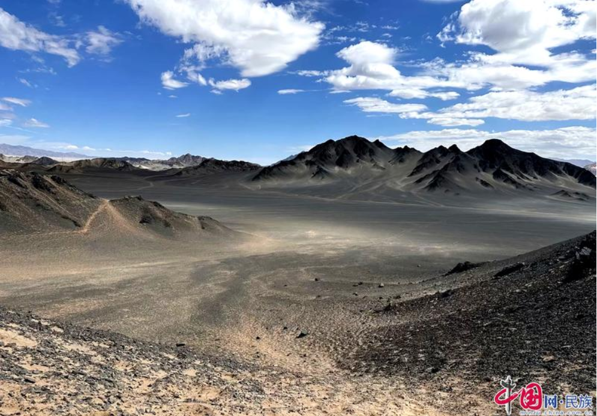
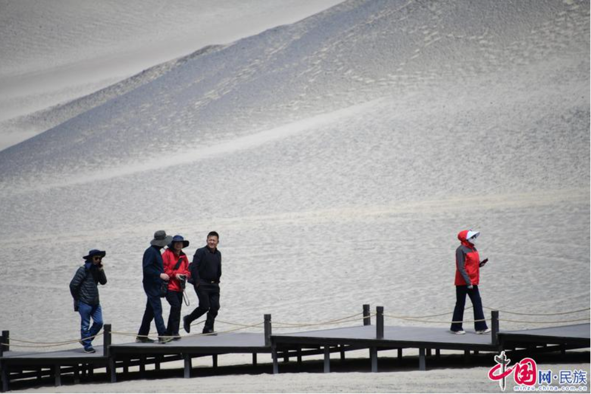
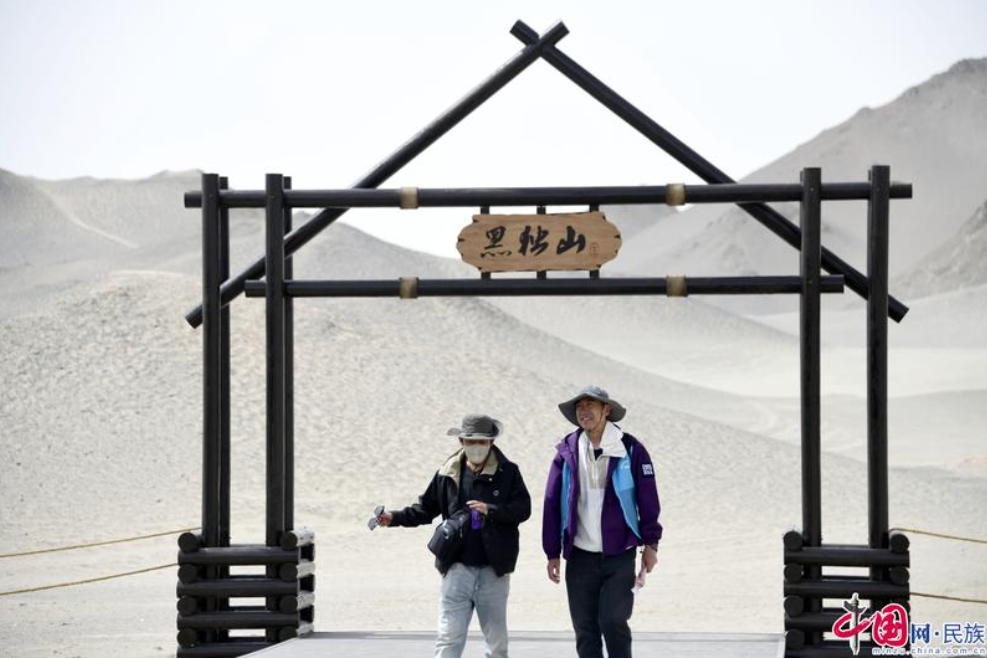
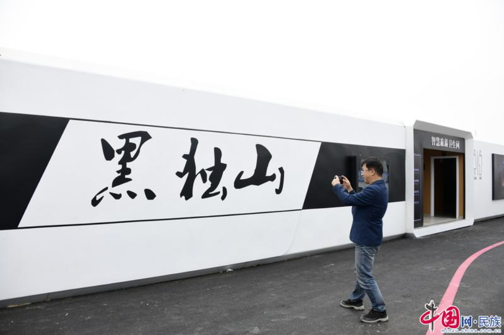
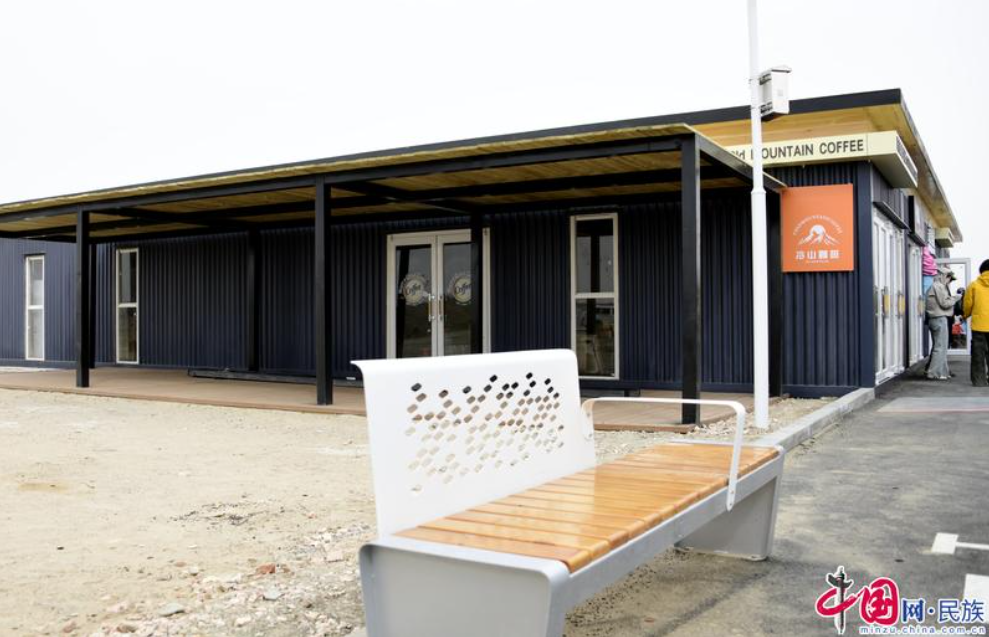

【央媒看海西】青海茫崖：野景点到金名片，黑独山重现“水墨画卷”
发布时间：2025年08月1日 | 来源：西海发布
“第一次在卫星地图上看到这片山时，还以为是数据错误——地球怎么会有这样纯粹的黑色山体？”广东游客林晓雯架起三脚架，镜头对准眼前沉寂千万年的黑色山峦。她的感叹，道出了所有初见黑独山者的震撼。
黑独山，位于青海省海西蒙古族藏族自治州茫崖市冷湖镇，在长期风蚀作用下，这里形成了独特的黑色雅丹地貌景观。矗立在荒漠中的黑独山像一幅壮美的水墨画，被称为“地球上最像月球的地方”，是柴达木盆地一道亮丽的风景。

七月，骄阳洒在黑独山起伏的山峦上，深浅不一的墨色在山脊处自然晕染，如同巨幅水墨画铺展在戈壁滩。5月21日，经过数月建设，黑独山风景区正式对外开放。这片位于柴达木盆地西北边缘的奇幻地貌，从此告别了“野生景点”的历史，成为青海打造国际生态旅游目的地的又一张金名片。
从冷湖镇出发，沿G215国道向东北方行驶约12公里，一片如泼墨画卷般的山峦浮现于地平线。这里隶属于祁连山脉西段支脉的赛什腾山最西端，四周被荒漠戈壁及无人区环绕。前几年，不少网络博主到此探险，在网络平台发布黑独山的视频后，这片沉寂千万年的山峰逐渐被世人所熟知。
“请沿栈道游览，勿踏入黑色砾石区。”进入景区，广播循环播放着提示。在开放栈道入口，工作人员耐心劝导试图跨过围栏的游客：“这些黑色砾石层脆弱得像酥饼，一个脚印可能十年都恢复不了。”
一句句温馨提示，源于惨痛教训——黑独山暴火网络以来，越野车辆多次擅自进入，在这幅“水墨长廊”留下纵横交错的车轮印，至今仍像一道道伤疤刻在山体上。
为了规范旅游行为，茫崖市与中国旅游集团共同投资2000万元，在短短数月内完成了全长17公里的景区道路、游客服务中心、生态停车场等基础设施建设。所有游览栈道都采用离地设计，最大程度减少对原始地貌的干扰。

“目前黑独山已建有超市、旅游厕所、停车场等基础设施，正加快黑独山、胭脂山内部基础设施建设工作，保障旺季游客需求。今年还将策划若羌——茫崖跨区域旅游研学活动、黑独山水墨丹青绘画等活动。同时将加强员工培训，提升游客体验，助力产业长远良性发展。”茫崖市文体旅游广电局副局长李海风说。
而当地政府的破局之道，是正在构建“保护——体验——价值”的三维模型。今年7月5日，茫崖市冷湖镇人民政府和茫崖市文体旅游广电局联合发布公告，针对黑独山胭脂山区域推出游览区、缓冲区、禁游区的分区管理制度，科学保护这一地质瑰宝，实现生态保护和旅游开发的和谐共生。

“我们还推出‘自愿回收垃圾计划’，在游客进入黑独山时免费为游客发放环保袋，方便携带和投放垃圾，游客游玩结束离开时可根据拾取垃圾重量换取奖励，如垃圾袋、冰箱贴等。”茫崖市文体旅游广电局相关部门负责人说。
茫崖市制定的这套生态保护系统，很好地平衡了黑独山的生态与游客承载量。在保护中发展，在发展中保护，正是青海发展旅游产业，打造国际生态旅游目的地的一贯理念和出路，茫崖市将坚持“生态优先、科学开发”原则，逐步推进游客中心、智慧导览系统等建设，最终建成集地质研学、生态观光、文化体验于一体的旅游综合体。

景区建设，不仅要前瞻性地为区域的生态承载力和长远发展打下基础，还要着眼于当下游客的基本需求。在这方面，茫崖市对黑独山景区的基础设施完善可谓是倾尽全力。景区管理者深知，对于这片历经千万年风蚀才形成的脆弱“水墨丹青”，任何不当的建设都可能带来不可逆的伤害。因此，从规划伊始，“轻触大地”就成为贯穿所有基础设施建设的最高准则。
步入景区，最引人注目的，无疑是那些精心设计的游览栈道系统。它们并非传统的贴地木板路，而是采用了高架离地的钢结构或耐用复合材料。一根根坚固的桩基深深打入地质稳定层，栈道主体则稳稳地“悬浮”在黑色砾石地表之上数十厘米。
“这种设计避免了游客踩踏对地表脆弱结构的直接破坏，栈道宽度经过科学测算，既保证游客安全舒适通行，又有效引导人流，防止无序扩散。沿途设置的多处观景平台，视野开阔，角度绝佳，让游客得以沉浸式欣赏黑独山不同角度的‘墨韵’。”茫崖市委常委、宣传部部长吕海全说。

从昔日“野生景点”的乱象，到如今拥有高标准、生态友好型基础设施的规范景区，黑独山的蜕变印证了茫崖市打造国际生态旅游目的地的决心与智慧。
“这里没有繁华都市的喧嚣，没有人工雕琢的痕迹，只有纯粹的自然之美。”正如林晓雯在朋友圈写的那样，这片神奇的土地，生态保护与旅游发展相得益彰，绘就的不仅是一幅自然景观的水墨画卷，更是人与自然和谐共生的宏伟蓝图……
（来源：中国网）